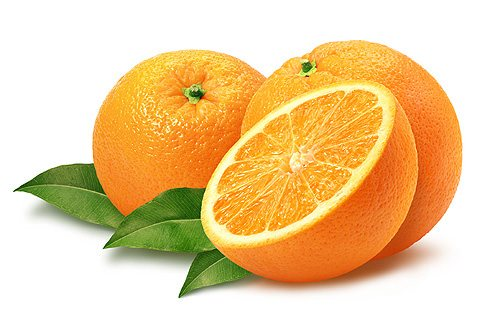
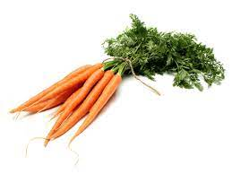

Obuolys tai vienas populiariausių vaisių, augančių mūsų klimato zonoje. Obuolių galima gauti ištisus metus, kadangi jie išsilaiko per žiemą. Tai turbūt ne tik populiariausias, bet ir vienas iš sveikiausių vaisių, kurių rasime beveik kiekviename sode. Obuolys turi daug daugiau naudingų savybių nei anksčiau manė žmonės, jis ne tik ilgina gyvenimą, bet ir saugo nuo vėžinių susirgimų.
1
Apelsinas

Apelsinas sveria 100 – 150 gramų ir auga ant apelsinmedžių. Vaisiai priskiriami citrusinių vaisių kategorjai kartu su citrinomis, greipfrutais, pomelais ir t.t. Yra daug apelsinų rūšių, tačiau jie skirstomi į 2 pagrindines grupes – saldžius ir karčius. Manoma, kad apelsinas yra hibridas, kilęs iš pomelo ir mandarino. Apelsinmedžiai auginami tropinio ir subtropinio klimato vietovėse, o 1987 metais, tai buvo labiausiai pasaulyje paplitęs vaismedis pasaulyje. Daugiausiai pasaulyje apelsinų užaugina Brazilija ir JAV. Šiuo metu vis dar nežinoma iš kokio laukinio augalo kilo apelsinas, tačiau manoma, kad jų kilmės vieta yra Pietų Kinija, Šiaurės rytų Indija ir galbūt Pietryčių Azija. Pirmiausia Apelsinai buvo pradėti auginti Kinijoje, maždaug prieš 4500 metų. Europą apelsinai pasiekė XI a., kaip buvo kryžiuočių atgabenti į Italiją.
1
Daržovės
Morka

Morką – šakninė daržovė, plačiai naudojama visame pasaulyje. Dažniausiai oranžinės spalvos, dėl jose sukaupto gausaus kiekio beta karotino (vitamino A). Dažniausiai valgoma šakninė daržovės dalis, tačiau kartais ir viršutinė, žalia morkos dalis. Šviežios morkos yra traškios ir kietos, o termiškai apdorotos – minkštos. Jos pasižymi švelniu skoniu ir aromatu, dažniausiai naudojamos salotoms, sriuboms ir garnyrams arba valgomos šviežios. Manoma, kad morkos kilę iš Irane ir Afganistane augusių laukinių morkų, o dabar populiari valgomoji morka kilus iš Europos ir Pietvakarių Azijos. Šiuo metu daugiausiai morkų pasaulyje užaugina Kinija.